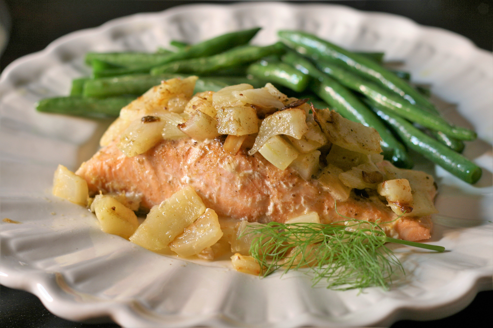

Baked Orange Salmon with Fennel Recipe

Descripsion
A surprisingly good and healthy dish for guests or family. Salmon fillets are roasted with fennel bulb in an orange sauce.
Ingredients
- 1 small fennel bulb, trimmed and diced
- 1 tablespoon olive oil
- 2 (8 ounce) salmon fillets
- ½ cup orange juice
- 1 pinch Old Bay Seasoning™
Steps
- Preheat the oven to 350 degrees F (150 degrees C).
- In a medium skillet over medium heat, cook fennel in olive oil until translucent, about 20 minutes.
- Place the fillets skin side down in a glass baking dish. Pour the orange juice over the fillets. Sprinkle fennel over in an even layer, and season with OLD BAY. Cover the dish with aluminum foil.
- Bake for 20 to 25 minutes, or until fish flakes easily with a fork.